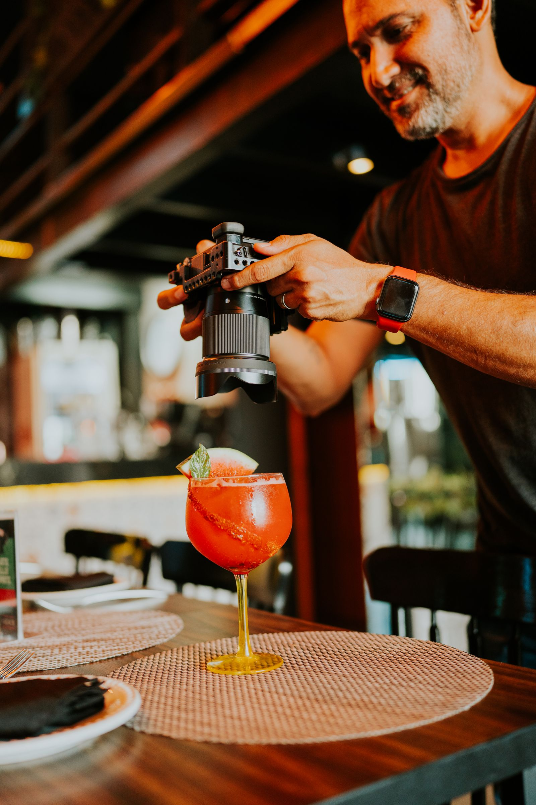

You shoot every plate already. Now the restaurant covers it.
Restaurants, cafes and bars on SIGNL post comp offers because they want exactly what you already do: a real visit and an honest post about it. Claim the meals you want, visit like a guest, post within 48 hours, disclosed. Your track record does the rest, and it is the record businesses pick from.

Posted.
SIGNL is free for creators. Always. Businesses pay the platform. You never pay to join, to list, or to get booked.
Local businesses comp local creators a meal, a service or an experience, and creators post honestly within 48 hours.
Invite other creators with your personal link and earn Momentum points: +3 per sign-up, +10 per approval. Points order the creator list businesses see, so the creators who build the roster get picked first. Paid cash campaigns sit on top of comps, and Headliners (15,000+ followers) are first in line for them.
How SIGNL works for you
Claim your founding spot
Apply free in the app and get a decision or a clear status within 2 business days.
Claim offers that fit your life
When your market opens, local businesses post comp offers with exactly what is included, how many people it covers and the visit window. Claim only the ones you actually want. There is no quota and no schedule set by SIGNL.
Visit, post, done
Show up like a real customer, redeem with your in-app code, and post honestly within 48 hours with a clear disclosure that the visit was comped. Every on-time post builds your Momentum and your Local Impact Score.
The comps food creators claim
New openings, chef counters and the neighborhood spots your followers save for later.
On the menu
If it plates well and locals can book it this week, it can be a comp on SIGNL.
- Chef-driven restaurant
- New opening
- Tasting menu / chef counter
- Ramen / sushi
- BBQ
- Bakery / pastry
- Cocktail bar (21+)
- Food truck
- Brunch spot
- Dessert bar
Every offer, in the open
Before you claim anything, the offer states exactly what is comped, how many people it covers, and the window you can visit in. No vague promises, no surprises at the register: comps redeem inside the app on your single-use code, never at the business's point of sale.
Your record is your resume
Every delivered post builds your reliability record and Local Impact Score. Businesses see both before they choose, so a clean, on-time record gets you picked first, and at 15,000 followers and up it puts you first in line for paid cash campaigns.
Written for exactly who you are
SIGNL has a page for the way you actually post. If this one is not you, one of these is.
Creator moms
Family spots, flexible timing, and offers that say up front whether the kids are part of the plan. See the creator moms page →
College creators
Free meals and coffee near campus, posts that fit between classes, and a campus badge on your profile. See the college creators page →
Creator dads
Wings, BBQ, barbers and game-day spots, comped for the guy the group chat already trusts. See the creator dads page →
Every creator
The full picture: tiers, rules, Momentum points and the application. See the main creator page →
Questions, answered straight
I already post every meal. What does SIGNL add?
Access and order. Instead of hoping a restaurant notices you, businesses post comp offers and you claim the ones you want. Every visit is tracked, your on-time record builds your Local Impact Score, and that record is what gets you picked first. At 15,000 followers and up, the Headliners band also puts you first in line for paid cash campaigns on top of comps.
Do I have to post something positive?
Never. Honest posts only; that is the entire product. Businesses cannot require a positive post or review, and a business that pressures a creator is removed from the platform. Post your real take, in your own voice, including the parts that missed. That honesty is exactly why your followers trust the posts, and why businesses want them.
What exactly do I have to post, and how fast?
On every comped visit you post the Standard Visit: 1 post or reel plus 1 story that shares the post about the real visit, live within 48 hours, with a clear disclosure that the visit was comped. Honest is the whole point: no business can require a positive post, ever.
How often can I claim offers?
As often as offers fit your feed. You set your own weekly visit cap in the app, and businesses see your reliability record, so steady, on-time posting is what grows your access. Quality beats volume: your followers trust you because your posts are real, and the roster is built to protect that.
Does it cost anything to join?
No. SIGNL is free for creators. Always. Businesses pay the platform. You never pay to join, to list, or to get booked. On standard visits your compensation is the comp itself: the meal, service or experience the business provides. The only cut SIGNL ever takes is 3 percent of a paid rate you set yourself, if a business books you at it. You keep the other 97 percent.
Claim your founding spot
Sign up now to be a founding creator, right in the SIGNL app. Founding profiles are reviewed in sign-up order across the 37 founding markets, your founding priority never expires, and markets open over the next 30 to 90 days as each roster completes.
Sign-ups live in the SIGNL app
Create your account and build your founding profile in a few minutes: your market and home city, your handles, your tier band and what you post about. It is free, and it always will be for creators.
Create my founding creator account
Already signed up? Sign in at app.joinsignl.com